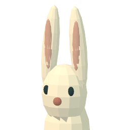
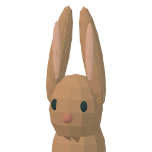
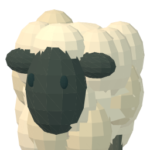

Pip
Rabbit · 1 space

LAST FERRY · MODEL-DERIVED PORTRAIT CANDIDATE
The same cream rabbit, tan rabbit and woolly sheep from the cove, rendered into small transparent portraits. The menu keeps its painted surfaces, readable words and familiar selection checks.
Rabbit · 1 space

Rabbit · 1 space

Sheep · 2 spaces

Rabbit Pier · inspection is free
After boarding: boat needs depth 2.
Pip and Rue board, then the tide rises. Both are safe aboard.
After this action: Boat 2/4 spaces · tide 1 (now 0)
44px portraits beside the existing name and space cost.
Harbor · inspection is free
After unloading: boat needs depth 1.
Everyone will be safely home at Harbor.
After this action: Boat 0/4 spaces · tide 2
40px portraits. Content reflows by available width; lower details scroll while Confirm stays fixed.
DESIGN SPECIMEN · Candidate portraits derived from existing geometry with simplified offline diffuse lighting. This is not a gameplay screenshot or an implemented runtime fix. The exact game rendering, phone text fit, full warnings, focus, fallback and image decode behavior require integration checks.